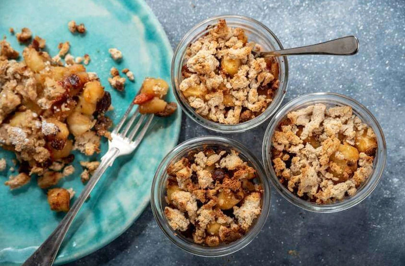

Szarlotka w słoiku z płatkami górskimi

Opis
Niewiele potraw tak jednoznacznie kojarzy się z domową atmosferą, jak aromatyczna szarlotka. Kwaskowate jabłka doprawione cynamonem to dla wielu smakoszy sposób na niebiański deser. Jesteśmy zdania, że nawet najbardziej tradycyjne receptury można smakowicie modyfikować. Tym razem szarlotkę podacie nie na talerzu, a w słoiku. Zaintrygowani? Sprawdźcie, jak zrobić to krok po kroku.
Dla kogo?
Do odważnych świat pyszności należy! Choć słoiki do niedawna nie cieszyły się szczególnym poważaniem, dziś są jednym z najmodniejszych kulinarnych trendów. Przekonajcie się, że mogą wyglądać naprawdę zjawiskowo.
Na jaką okazję?
Rodzina i znajomi nie wierzą, że odnajdziecie w sobie kucharskie powołanie? Zaproście wszystkich na podwieczorek – szarlotka z płatkami górskimi zaserwowana w dekoracyjnych słoiczkach rozwieje wszelkie wątpliwości.
Czy wiesz że?
Powstanie szarlotki zawdzięczamy francuskiemu cukiernikowi, żyjącemu w XIX wieku. Marie-Antoine Carême przygotował ją specjalnie dla cara Aleksandra I. Nazwa jednak upamiętnia jego szwagierkę – Charlottę Pruską.
Dla urozmaicenia
Bardzo dekoracyjnie wyglądają włożone do słoików laski cynamonu.
Składniki:
ciasto:
- masło orzechowe....................200 gramów
- tłuszcz kokosowy...................100 gramów
- dojrzałe banany....................3 sztuki
- mąka migdałowa.....................300 gramów
- mąka kokosowa......................240 gramów
- płatki owsiane górskie.............100 gramów
- daktyle............................100 gramów
- ksylitol...........................50 gramów
farsz:
- kwaśne jabłka......................1 kilogram
- rodzynki...........................50 gramów
- orzechy laskowe....................50 gramów
- nasiona goji.......................50 gramów
- syrop klonowy......................100 mililitrów
- cynamon............................1 łyżka
- cytryna............................2 sztuki
- olej roślinny......................3 łyżki
- laska wanilii......................1 sztuka
Przygotowanie krok po kroku.
- Do kielicha miksera dodaj obie mąki, masło orzechowe, olej, tłuszcz kokosowy, banany, płatki owsiane, daktyle, ksylitol. Wszystko razem rozdrobnij na gładka masę. Ciasto zawiń w folię spożywczą i wstaw do zamrażalki.
- Cytrynę sparz wrzątkiem, dobrze umyj, otrzyj z niej skórkę, z jednej wyciśnij sok. Wanilię przetnij po długości na pół, krawędzią noża wyskrob z niej miąższ.
- Jabłka obierz ze skóry, usuń z nich gniazda nasienne, jabłka pokrój w duże kawałki (około 2 cm).
- W garnku na rozgrzanym tłuszczu oleju smaż kawałki jabłek razem z syropem klonowym, cynamonem, wanilią oraz z sokiem i skórką z cytryny. Jabłka smaż dopóki syrop nie zacznie karmelizować. Dodaj do niego rodzynki, jagody goi i z grubsza pokruszone orzechy laskowe.
- Na dno naczynek włóż pokruszone kawałki ciasta, przełóż je karmelizowanymi jabłkami, górę jabłek przykryj kolejną warstwą kruszonki.